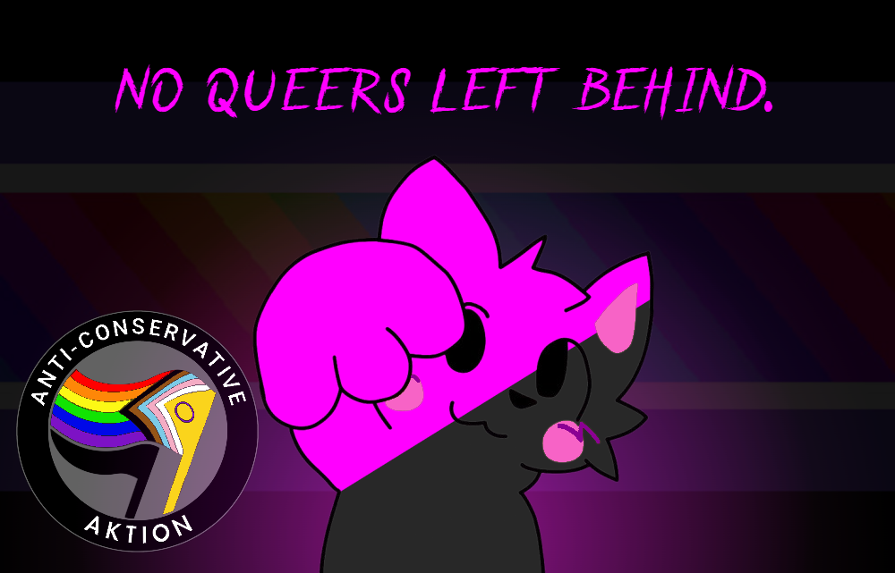

Consistent Progressivism (alternatively referred to as "Noveltism"), is a political worldview & ideology advocating the complete and total abolition of all forms of conservatism, in favor of a radically queer stateless/decentralized society in which conservatism is nonexistent, allowing for all beings to flourish in pleasure, freedom, & libertine hedonism, identifying in any way they please and forming Voluntary Social Relations with whoever they desire that can communicate while living free from persecution & stigmatization over their identity.
Consistent Progressives vehemently reject all forms of conservatism, analyzing conservatism as one of two all-encapsulating worldviews existing in a binary (the other being progressivism), that becomes ever more destructive & genocidal the more consistently it is practiced.
A political worldview defined by a broad category of ideas either implicitly or explicitly believing that beings should be discriminated against because of their race, gender identity, pronouns, sexual identity, or anything else regarding their identity that does not harm others; that individuals based on some aspect of themselves that they were born with or identify as, or some physical, sexual, or personal pleasure they happen to have can be "lesser" individuals than others whom they would consider "pure", and therefore that these "subhumans" should be persecuted due to their identity being viewed as "lower" than the identity of someone else a given conservative views as "pure".
Synonymous with "bigotry", "prejudice", & "discrimination".
A political worldview defined by the negation, rejection, & opposition to conservatism; an acknowledgement that no identity turns one into a "subhuman", & an advocacy of what would follow from the nonexistence of conservatism: statelessness, egalitarianism, decentralization, freedom of identity, free love, & an established solidarity where all races, gender identities, sexualities, ages, mentalities, & general beings are viewed as equals & held to the same standard of non-hierarchical organization, anti-discrimination, & respect of identity.
Synonymous with "social justice", "intersectionality", & "radqueer".
A political worldview advocating the abolition of all forms of rulership & hierarchical power structures, most predominant among them being the state/government, which maintains a monopoly over the defense apparatus. To replace state functions, bottom-up methods of organization are put in place as opposed to the statist top-down/centralized ones, in essence creating a "rule without rulers", "order without hierarchy", "governance without government", & "organization without centralization". Rather than there being a central control over defense, government of any kind ceases to exist at all, allowing defense to be left to the sole control of progressives in VSRs, who now, rather than being locked to only one method of force/violence (the state), now have access to a vast variety of different means of defense/violence (i.e., localized militias, mutual defense, community VSRs, etc), which they can spontaneously swap between at any moment, ensuring all possible forces to eradicate conservatism are available.
Synonymous with "statelessness", "horizontalism", & "anarchism".
Any identity a being may have that differs from one assigned at birth to them by society. The most common among them is transgender, but TransIDs expand to include any aspect of ones identity that deviates from the one society has applied to them. TransIDs include, but are not limited to: transgender, transage, trace, transabled, transbody, transpecies.
More can be learned about TransIDs here.
Any sexuality/attraction/'philia' bearing the unique empirical status of extensive (relative to most other sexualities) persecution & stigmatization within conservative society; para sexualities are identifiable by their artificial (gained by conservatives) non-normative/atypical reception within society. Para sexualities include, but are not limited to: intra/chronophilias (M/YAPs & AAM/Ys), zoophilia, necrophilia, consanguinamory/incest, objectophilia/objectum.
More can be learned about different paraphilias here.
A progressive social relation structure that any non-conservative who is not a BWUI can join, requiring that every single being involved has chosen to opt-in to it solely of their own volitional pleasure desire, remains there only as long as they find the relation satisfies their desire, & is free to exit at any point without any restrictions or barriers to doing so. Short for "Voluntary Social Relation", VSRs would be the universal all-encapsulating model for relations in progressivism, taking the place of all social interactions as a whole but especially the coercive ones existing under conservatism, including but not limited to: the family institution, marriage, education, production.
Any individual entirely incapable of communcation* of any kind (both speech and movement), placing them in a position where they are essentially "Beings With Unobservable Intent" (as they can't speak in any way, nor can they move, thus leaving them with no means of making other beings aware of their desires). Other than conservatives, BWUIs are the only beings incapable of joining VSRs, though this is not because of some ageist or ableist "subhuman" factor like what is present in conservatism; quite the contrary actually, as BWUIs are viewed & treated equally to everyone else. There's nothing external stopping them from joining VSRs at all; the only reason they're incapable of joining is because due to not being able to communicate, it would be impossible to know whether a BWUI is opting-in to join a VSR or not (having any way of knowing this would mean they can communicate, and thus would no longer be considered a BWUI), & as such it would be assumed that they aren't until they indicate otherwise, thus negating the BWUI condition. It is possible for any being to transition in and out of being a BWUI at any point, though remaining a BWUI is a very short-lived and temporary experience.
*("Communication" here is used in a very broad sense, defined as anything an individual can do to make another individual aware of something the first individual would like to express. Communication is not limited to speech, though speech is the most common form of communication, & communication can also take the form of things such as writing, hand signals, body language, or braille. It is for this reason that movement is relevant, as being able to move can be fell-back on if speech is not available to a given being as a form of communication. It is both not being able to speak and not being able to move in any way that renders someone to be a BWUI, not merely being non-verbal.)
A centralized & hierarchical structure of organization characterized by the monopolization of power & authority within a given region, with this authority being used to control the military, police, court, & general defense apparatus, which is used to close off other means of defense, locking in the government forces as the only available means of defense among the populace, & using this exclusionary advantage to enforce its arbitrary rule onto the populace via "legislation" & often coerced extraction of resources from the population to sustain itself. It is a form of conservatism, due to its centralized structure & monopolization of defense, rendering all outside the government to be reduced to a "subhuman", while also amplifying all other forms of conservatism, as the government is the baseline conservatism from which the others are forced onto society & incentivized to become ever more consistent. Also called a "state".
Synonymous with "hierarchy", "rulership", & "centralism".
A stance on praxis discouraging, impeding, prohibiting, or otherwise hindering the use and/or extent of one's own and/or one's allies use of violence/force.
Fundamentally fluctuating & subjective, determined by observation of the time & context of the topic in question, with said topic able to be seperated from the aforementioned attached concept in question at any moment due to this, whatever said concept/topic may be.
Fundamentally & permanently static, objective, & inherent to the mentioned concept in question regardless of context, time, or other variables; unable to be seperated or unlinked from the given concept/topic for whatever the reason may be.
A societal institution formed when two individuals reproduce, one of them gives birth to offspring, & said offspring is then involuntarily forced into a social institution at the instant that they exist where they will be subject to the hierarchical ruling granted within such an institution to one or more individuals, usually though not always delineated by genetic code, that are considered to be the ruling authorities, known as "parents". The individual offspring, upon being forced into the institution, is then, whether they like it or not, forced to obey the every whim of the ruling authorities, lest they face persecution* by the state. Ruling authorities (whether it be several through the "nuclear" or "extended" models, or only one) in the family institution are granted the power to complete and total control over every aspect of the lives, identities, and actions of individuals who never even chose to enter the institution nor are permitted to opt-out, on the basis of their existence time in that they have not existed long enough (as determined arbitrarily by the state) to have basic autonomy.
(Important to note here is that in some instances they'll be persecuted by the state anyway even if they do obey the every whim of the ruling authorities under the condition that the ruling authorities go against the higher ruling of the state, during which the persecution may consist of being forced to a shelter where they will await a new "parent" in the process known as "adoption".)

The Consistent Progressive platform is that no being should ever be persecuted for their identity, & all should be able to live, have total bodily autonomy, and identify in any way, shape or form that they want. All social relations should turn into VSRs and follow the VSR structure model, where all who are involved with a relation have chosen to opt-in to it, stay in the relation only as long as it makes them happy, & are free to exit at any point unchallenged.
Central to the VSR model is advocacy of the abolition of the family institution, as it perpetuates many of the worst and most widespread forms of conservatism, and through a eugenicist lense at that. From this, Consistent Progressives promote polyamory, TransIDs, consanguinamory/incest, free love, the abolition of any and all age limits/restrictions (allowing for free MAP/YAP & AAM/AAY VSR relations), & the abolition of ableism.
Consistent Progressives also advocate the abolition of compulsory schooling, with the same VSR model coming in to replace this, where attendance is both optional and solely decided by those attending, placing those choosing to attend of their own volition at the forefront of their curriculum, where they control the pace, content, length, & structure of their education through a bottom-up model as opposed to the top-down one of the state, assuming they want social education at all as they would have the freedom not to and to self-educate as well.
We also advocate the abolition of all nations, borders, police, central militaries, courts, and governments/states, in favor of a decentralized progressivism model built through VSRs, where individuals can freely join VSRs that would be formed for the purpose of defending against conservatism, and as such these defense VSRs would grow into bottom-up interconnected local militias, community organizations, and mutual defense pacts focused entirely towards anti-conservatism with no central point of command for conservatives to strike at due to the decentralized model, allowing for rapid adjustment to any potential lingering conservatives or conservative attacks, with the decentralization also allowing for the militias to quickly work together and outnumber any who flip and turn conservative.
We advocate the abolition of purity culture & all conservative social norms assigned to beings over traits such as race, ethnicity, gender identity, age, and mentality, in favor of a society where individuals start & stay as free beings not tethered to any preimposed norms or standards upon their identity.
As progressives, we are open to almost any form of praxis to spread consistent progressivism, but we do have very specific exceptions of praxis that we will not tolerate:
Pacifism, defined as a praxis rejecting the use of violence, is the death of any and all ideologies that it touches. This is because violence is required, both by conservatism & progressivism, to enforce anything that they want to do, albeit for drastically different purposes since conservatives want genocide and progressives want to defend from genocide. If progressives are not permitted to use violence, liberation cannot be secured & the conservatives, who have no problem whatsoever with violence, will win out. For this reason, we reject pacifism as a valid praxis, even if pacifism itself technically does not contradict progressivism.
As progressives, we reject any and all forms of conservatism. This includes the state. For this plain and simple direct reason, we refuse to ally ourselves with anyone who believes "transitory statism" is a valid praxis; progressives want nothing whatsoever to do with tankies. If someone does not seek the complete & total abolition of all forms of conservatism including the state, they do not share our goals and are a conservative, thus they are an enemy. We entirely reject the foolish idea that a form of conservatism can be used to abolish conservatism; we seek the abolition of conservatism through decentralization/statelessness strictly, as it is the only structure consistent & compatible with the goal.
We refuse on all grounds to compromise on any of our principles; we seek the abolition of all forms of conservatism & the liberation of all identities (yes, this includes MAPs/YAPs/AAMs/AAYs, Zoos, & Necros, with a strict pro-contact stance on all three). We seek the complete and total destruction of the family structure as it is a slavery institution, & seek to replace it with a VSR model. We promote more forms of "degeneracy" & "wokeness" than even Hitler 2.0 & his MAGA nazis have nightmares about. We promote total LGBTQIA+, radqueer, & youth liberation (no age limits on anything), unrestricted public nudity, free pornography, & a hedonistic pleasure society without age boundaries. We are anti-gun regulation of any kind, & seek for all progressives to freely acquire any firearms they desire so that they can defend themselves against conservatism & aid progressive militias. We seek the complete and total abolition of all forms of nationalism, borders, and governments, & most importantly of all, we seek to wipe all forms of bigotry, prejudice, eugenicism (this includes so-called race "science", gender binary "science"/gender "biology", brain development "science", TERFs, SWERFs, truscums, sysmeds, & "human nature" "science"), & discrimination (broadly classed "conservatism") off the face of the Earth, along with every single conservative standing in the way of liberation.
Any of this sound too "radical" for you? Feel free to go to some conservative platform then, because we vehemently refuse to compromise on any of it.
Overall, we seek the complete and total abolition of all forms of conservatism, which is what this entire platform can be shortened to. Consistent Progressivism welcomes all who aren't conservative.
Liberation is non-negotiable.
A: Because there are a large number of conservatives who have tried to explicitly call themselves "progressives" despite their ideology directly contradicting progressivism by allowing conservatism in order to mask that they are conservatives. Therefore, the added modifier term of "consistent" is necessary to differentiate from the other so-called "progressives" who are not actually progressive in the slightest. And no, there is not any such thing as "inconsistent progressivism" because progressivism is a static stance, being the total negation of all forms of conservatism; it is not possible to have an inconsistent version of this because it only has one singular version to begin with. At the instant that the "progressivism" of anyone allows conservatism, it is no longer progressivism. Similar to how a light switch can only ever be on or off at once, but would not be considered "off" if it was merely dim or flickering, as off is its own seperate static condition within the binary of "off" and "on".
(Please read the "The Spectrum of Conservatism" article for more theory on this topic.)
A: No it does not, as no objectivity can be found in the use of "status quo" or "traditional values" as part of the definition. The only semblance of truth to them being associated with conservatism at all is that they are both empirically conservative. But it is that exact reason- that they are only empirically conservative, why they can't be part of the definition. Traditions are empirically conservative because it just so happens to be that all of history has been filled with far more examples of conservatism in practice than progressivism; consistent conservative societies have existed numerous times in many places, compared to very few consistent progressive ones, if any at all. This same reasoning applies to the status quo; the status quo is conservative, but only as of right now. The thing making these not able to be included in the definition is the fact that it is entirely possible for both traditions and the status quo to switch to progressivism; if a progressive society were to be established, the status quo there would change from conservatism to progressivism, and eventually as it continues to exist over time, progressivism would eventually become a tradition there. Traditions and the status quo are entirely subjective based on the time and place- they are empirical statements rather than intrinsic connections, which is the reason they cannot have anything to do with the definition of "conservatism". Not only are they merely empirical statements however, but they're also commonly used by conservatives to try to create a smokescreen around conservatism in order to trick unsuspecting "centrists" into thinking that these empirical statements are somehow the definition, so that when they explain it to an unsuspecting apolitical, the apolitical is tricked into falling under the smokescreen and viewing conservatism as "not that bad if it just means 'traditions'", entirely unaware that the specific "traditions" conservatives support are the conservative ones: the genocidal, pro-slavery, discriminatory ones. "Traditional values" and the "status quo" are smokescreens, and Consistent Progressivism seeks to break the smokescreen.
(Please read the "Centrism as an impossibility" article for more theory on this topic.)
A: Consistent Progressives are vehemently against all conservatives and forms of conservatism, period. However, this is a question that makes no sense from the start, because conservatism is not a "lifestyle"; it is not an identity nor a personal stance of any kind. Conservatism is strictly an interpersonal stance on the identities of others, in that their identities are viewed as "subhuman"; there is no such thing as a "conservative lifestyle" because conservatism exists through the interpersonal, not the personal.
(Please read the "The Spectrum of Conservatism" article for more theory on this topic.)
A: Yes, along with incest, zoophilia, necrophilia, and all of the other paraphilias. What's important to emphasize is that all of these should be differentiated from rape (sexual relations with a living being who did not communicate opting-in to such relation), which Consistent Progressives do not support, as it is a form of conservatism. We support all of these happening strictly through the VSR model, like all other relations should.
(Please read the "Abolish Families", "Abolish Families (An Appendix)", "Para-Progressivism", & "An Extension to Liberation" articles for more theory on this topic.)
A: The Consistent Progressive platform does not take any official stance on philosophy or positive stance on economics, as individual consistent progressives may hold varying mutually compatible views on the topic. However, there is an official negative stance, being that we obviously do not support any economic systems that allow for or require conservatism, which would include currently existing "capitalism"/corporatism, and all forms of non-stateless "socialism"/"communism" (the central planning/DOTP kind). We do not support central planning, reformism, state regulations/intervention, corporations, landlordism dynamics, absentee/"private" (according to some definitions) property, hierarchies, or the state as a whole, as all of these are viewed as forms of conservatism.
(Please read the "The Benefits of Decentralization" article for more theory on this topic.)
A: Progressives are pro-contact for all sexualities via the VSR model; no ifs, ands, or buts about it. Any other stance implies unwelcomed intervention into a VSR to infringe on Free Love and would hence be a form of conservatism.
(Please read the "Para-Progressivism" article for more theory on this topic.)
A: Another label for Consistent Progressivism, used mainly as another shortener other than just "progressivism".